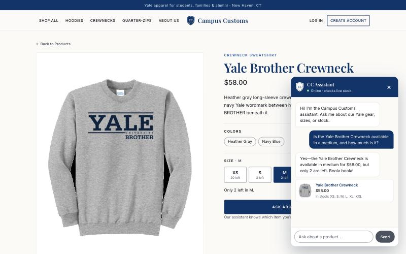
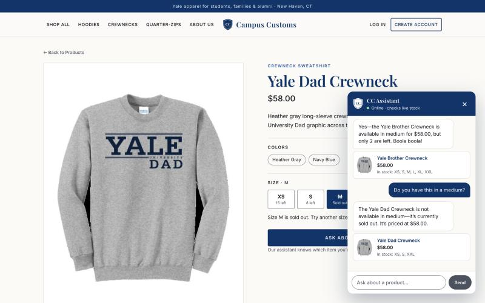
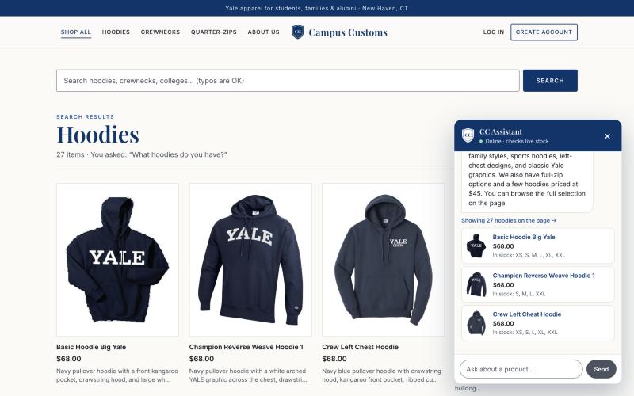
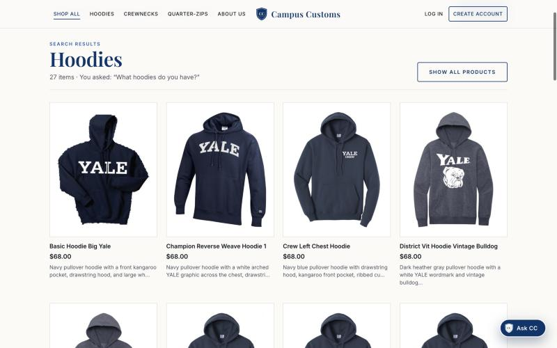
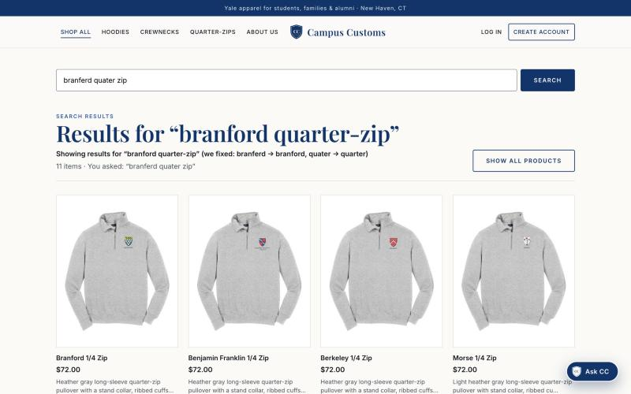

Problem 11 · Tested live on October 5, 2026 against the running site
(http://localhost:5173, React + Vite) and backend (http://127.0.0.1:8000, FastAPI + PydanticAI agent,
model gpt-5.6-luna via Portkey), as a guest user in a 1440×900 desktop browser.
Every number below was cross-checked against data/campus_customs.db.
#
Check
Result
Screenshot(s)
1
Chat checks inventory with honest stock & price from the DB
PASS
inventory.png, inventory_sold_out.png
2
Category question shows dynamic search-result cards on the page
Steps: Opened the Yale Brother Crewneck page, clicked size M, opened the chat and asked
“Is the Yale Brother Crewneck available in a medium, and how much is it?”

What this proves: the agent answered “available in medium for $58.00, but only 2 are left”, which matches the database
exactly (M = 2, price = $58.00). The product page's own size button independently shows “M · 2 left”, so the chat and the site agree with the DB.
Database ground truth (catalogue ⨝ inventory):
Product
Price
XS
S
M
L
XL
XXL
yale-brother-crewneck
$58.00
20
2
2
2
15
20
yale-dad-crewneck
$58.00
15
8
0
0
0
15

What this proves (sold-out case): on the Yale Dad Crewneck page I asked “Do you have this in a medium?”.
The agent knew which item “this” was and said it is sold out in medium at $58.00, matching the DB (M = 0). It reports a sold-out size honestly and doesn't invent stock.
Steps: From the Home page, opened the chat and asked “What hoodies do you have?”

What this proves: the agent's structured search result updated the website. It moved to the Products page, retitled it “Hoodies”
with 27 items · You asked: “What hoodies do you have?”, and rendered product cards (image, name, price, short description).
The chat links to them (“Showing 27 hoodies on the page →”) and previews the top 3.

What this proves: with the chat closed, the page shows a full grid of real hoodie cards built from the database
(all hoodies, prices $68 here). Each card links to its single-item detail page. The 27-item count matches the in-stock hoodies in the catalogue.
Steps: On the Products page, typed the misspelled query branferd quater zip into the search box and pressed Search.

What this proves: despite two typos, the site understood the shopper and showed
Results for “branford quarter-zip”, with the Branford 1/4 Zip first and 11 quarter-zips total. It also told the customer exactly what it assumed:
“we fixed: branferd → branford, quater → quarter”. Before this feature, a misspelled query like this either missed the Branford product or returned nothing.
The same fuzzy logic powers the chat agent's search_products tool. Details and before/after numbers are in output/usability.md (18/18 typo queries, up from 7/18).
Screenshots are in output/app_check_images/ and linked with relative paths, so this file opens by double-clicking.
Entrance animations were paused while capturing so each image shows the final, settled state of the page.